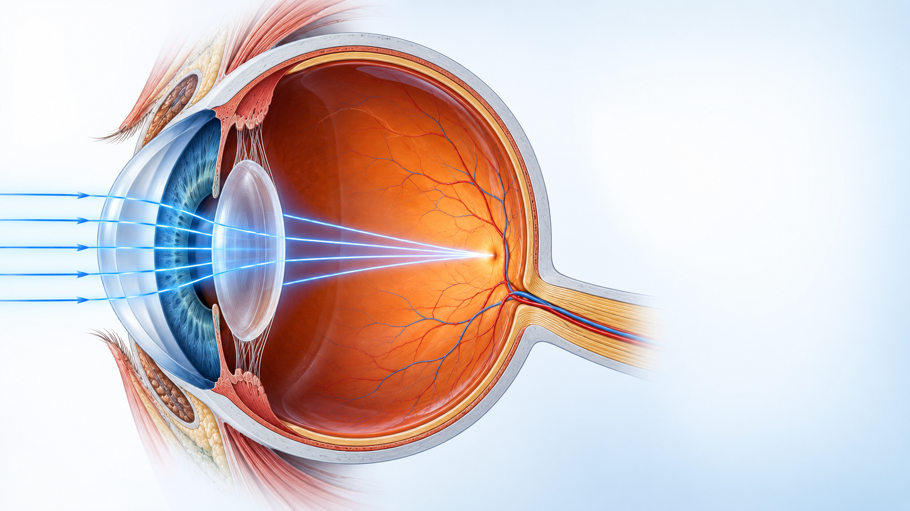
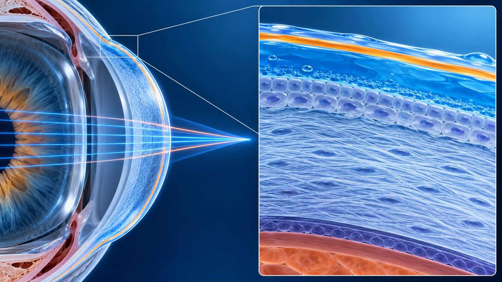
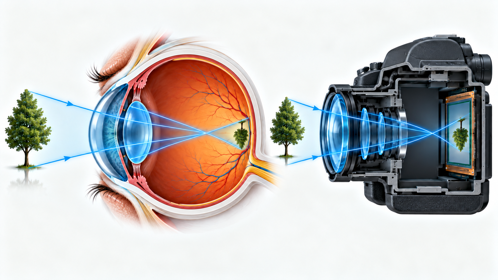

Obiettivi
- Seguire il percorso della luce fino alla retina.
- Collegare cornea, iride, cristallino e retina alle rispettive funzioni.
- Spiegare il ruolo del film lacrimale nella qualità ottica.
- Distinguere immagine retinica e percezione visiva.
- Interpretare i valori anatomici come dati rappresentativi, non universali.
Come entra la luce nell’occhio?
Livello intuitivo: La luce entra dalla parte anteriore dell’occhio, attraversa mezzi trasparenti e raggiunge la retina. Cornea e cristallino deviano i raggi per formare l’immagine. La retina avvia la trasformazione della luce in segnali nervosi.
Per essere maggiormente rigorosi: Il percorso comprende film lacrimale, cornea, umore acqueo, apertura pupillare, cristallino e umore vitreo. La pupilla è un’apertura, non un mezzo materiale. Le superfici rifrangenti e il gradiente interno del cristallino contribuiscono alla formazione dell’immagine.

Le strutture e le loro funzioni
Cornea
Livello intuitivo: La cornea è la finestra trasparente anteriore. La sua curvatura e il passaggio dall’aria ai tessuti producono una parte importante della deviazione della luce.
Per essere maggiormente rigorosi: Nel normale occhio non accomodato, la cornea fornisce indicativamente circa due terzi del potere complessivo. Il contributo dipende soprattutto dal salto di indice della superficie anteriore, ma anche da superficie posteriore e spessore. Uno spessore centrale di circa – e un raggio anteriore di circa sono riferimenti rappresentativi. Misure e caratteristiche individuali possono differire.
Iride e pupilla
Livello intuitivo: L’iride regola la dimensione della pupilla, come un diaframma. Modifica la luce che passa e quali parti del fascio partecipano all’immagine.
Per essere maggiormente rigorosi: Il diametro pupillare influenza illuminamento retinico, aberrazioni e diffrazione. La pupilla osservata dall’esterno è ingrandita otticamente dalla cornea e non coincide esattamente con l’apertura anatomica dell’iride.
Cristallino e mezzi interni
Livello intuitivo: Il cristallino completa la convergenza della luce e può cambiare forma per mettere a fuoco oggetti vicini. I liquidi trasparenti permettono alla luce di attraversare l’interno dell’occhio.
Per essere maggiormente rigorosi: Umore acqueo e vitreo hanno indici simili, ma non sono otticamente identici al vuoto. Il cristallino ha superfici curve e indice non uniforme. Nell’accomodazione aumenta il potere del sistema, senza spostare la retina come si sposterebbe un sensore.
Film lacrimale e qualità della superficie
Livello intuitivo: Un sottile rivestimento liquido rende più regolare la superficie davanti alla cornea. Se diventa irregolare, anche l’immagine può perdere nitidezza.
Per essere maggiormente rigorosi: Il modello tradizionale lipidico, acquoso e mucoso è una semplificazione. Le descrizioni attuali distinguono soprattutto uno strato lipidico superficiale e una componente muco-acquosa con gradienti. Stabilità e regolarità del film influenzano la prima interfaccia ottica. Gli schemi dei suoi strati non rappresentano spessori in scala.

L’immagine sulla retina
Perché l’immagine è capovolta?
Livello intuitivo: I raggi provenienti dalla parte alta di un oggetto raggiungono la parte bassa dell’immagine retinica, e viceversa. La geometria del sistema convergente produce così un’immagine invertita.
Per essere maggiormente rigorosi: Per un oggetto reale focalizzato, l’immagine retinica è reale e geometricamente invertita. La percezione dello spazio deriva dall’elaborazione dei segnali retinici e dalle loro relazioni con movimenti, esperienza e binocularità. Non occorre immaginare una semplice rotazione di una fotografia nel cervello.

Livello intuitivo: Nella figura corretta, gli alberi esterni sono diritti, mentre le loro immagini sulla retina e sul sensore sono capovolte. La parte alta dell’oggetto viene associata alla parte bassa dell’immagine.
Per essere maggiormente rigorosi: È un confronto qualitativo fra due sistemi convergenti. Nell’occhio la superficie ricevente è la retina, nella fotocamera il sensore o la pellicola. Un’immagine mostrata sul display viene orientata dal sistema elettronico e non rappresenta necessariamente l’orientamento ottico sul sensore.
Quanto vale il paragone con una fotocamera?
Livello intuitivo: Cornea e cristallino ricordano un obiettivo, la pupilla un diaframma e la retina un sensore. Questa analogia aiuta a distinguere le funzioni.
Per essere maggiormente rigorosi: La retina elabora già l’informazione, il cristallino cambia potere e l’occhio compie movimenti continui. Una fotocamera non rappresenta quindi l’intero processo visivo.